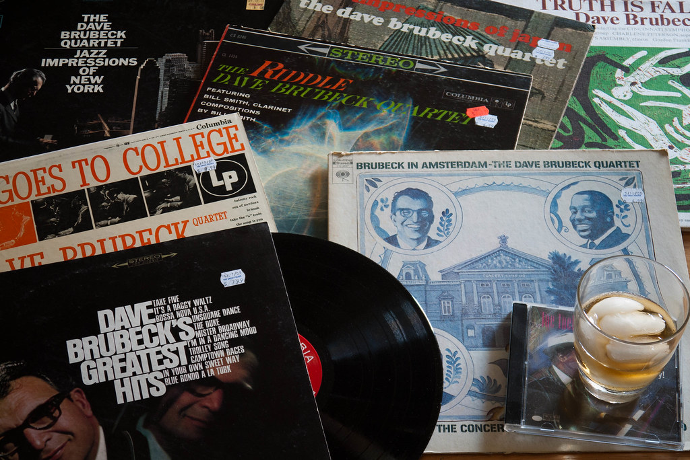
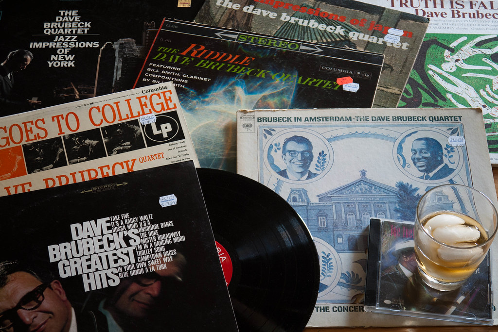

Dave Brubeck Quartet
Brubeck organized the Dave Brubeck Quartet in 1951, with Paul Desmond on alto saxophone. They took up a long residency at San Francisco's Black Hawk nightclub and gained great popularity touring college campuses, recording a series of albums with such titles as Jazz at Oberlin (1953), Jazz at the College of the Pacific (1953), and Brubeck's debut on Columbia Records, Jazz Goes to College (1954).
Bensound.com (The Jazz Piano)